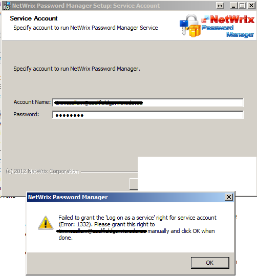

During product installation I am asked to specify credentials to run the software. But I get
the "Failed to grant the "Log on as a service" right to the service account" error.

Password Manager is based on a service. The service should be run under an account with appropriate rights to perform required operations. However the service account also should be allowed to run services. The right is called "Log on as a service" and can be granted via Local security policy,
To grant the "Log on as a service" rights please:
Password Manager is based on a service. The service should be run under an account with appropriate rights to perform required operations. However the service account also should be allowed to run services. The right is called "Log on as a service" and can be granted via Local security policy,
To grant the "Log on as a service" rights please:
- Run secpol.msc
- In the left pane navigate to Security Settings - Local policies - User rights assignment
- Double click Log on as a service entry in the right pane and add the account you want to use a service one
- Click OK to apply